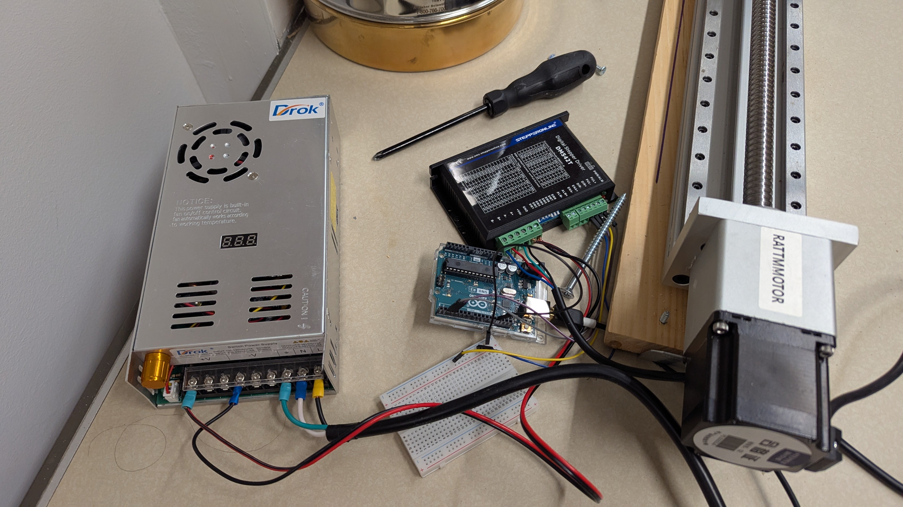
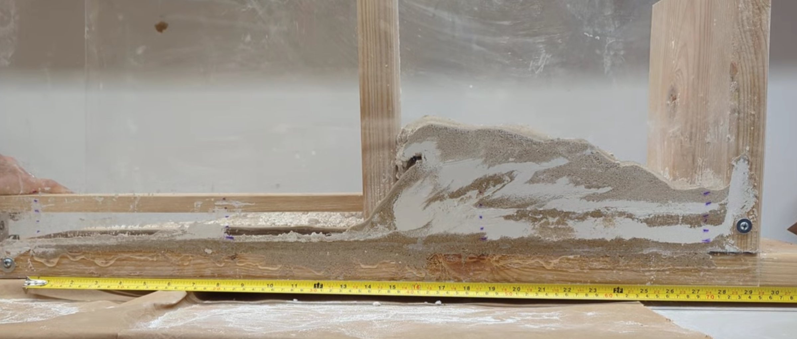
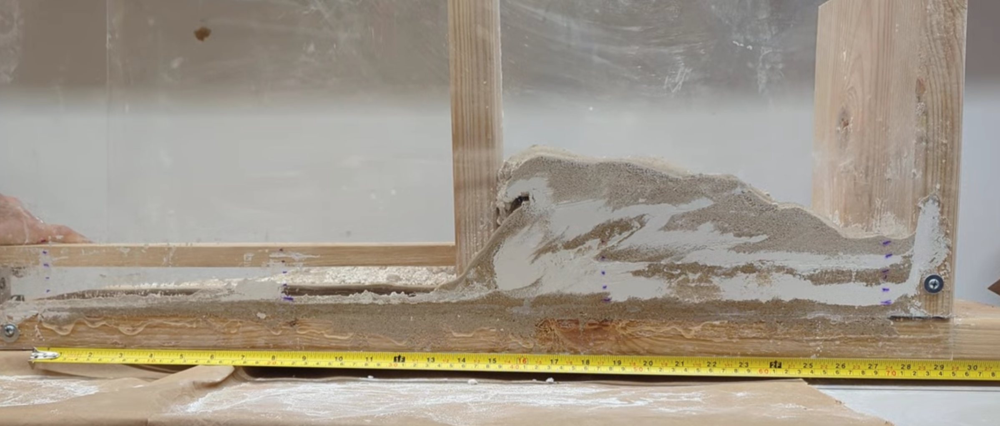
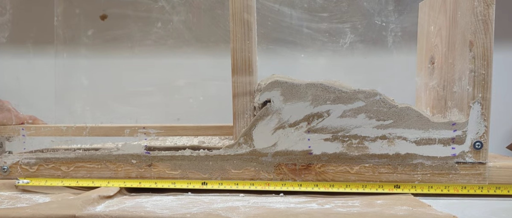

Research Project
Amazon River Basin: Quantifying burial ages and erosion rates using cosmogenic nuclides and numerical modelling
A narrative about a quiet landscape with a unique biodiversity captured from buried samples and riverbed sand.
Python
Numerical Modelling
Data visualization
Cosmogenic Nuclides

Research Project
Amazon River Basin: Lithology and Drainage Reorganization
A lot of Numerical Modelling to understand how lithologies might perturbate a one time steady landscape.
Python
Landlab
Lithology

Modeling Tool
Tectonic SandBox + Arduino
A course project that bring accessibility and controls over SandBox experiments to simulate tectonic shortening.
Arduino
Stepper motor
Tectonic Geology



 

